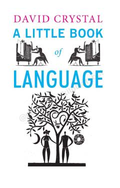

ALTilning paydo bo'lishi va rivojlanish tarixi haqida qiziqarli va sodda qo'llanma.
Ushbu kitob tilning kelib chiqishi, rivojlanishi va tuzilishi haqida qiziqarli ma'lumotlarni taqdim etadi. Muallif tilshunoslikning asosiy tushunchalarini, jumladan, grammatika, fonetika va dialektlarni oddiy va tushunarli tilda yoritib beradi.